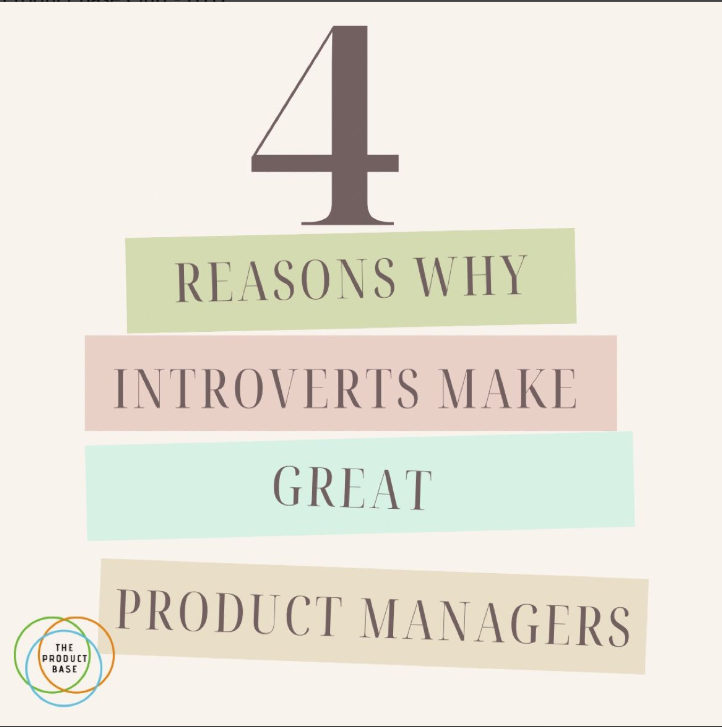

Reasons why Introverts make great Product Managers

Communication
In a product management position, you must effectively communicate your vision, work with cross-functional teams, and foster agreement. Introverts are more inclined to think before they speak, and this can lead to clear and concise communication.
Independence
Introverts often have a strong sense of independence and self-motivation. This can be particularly helpful for establishing priorities, controlling deadlines, and making sure projects stay on schedule.
Active Listening
Introverts frequently excel at active listening, a crucial talent for product managers. They are able to truly take in and comprehend what clients, colleagues, and stakeholders are saying, which helps them make wiser judgments.
Contemplation
Introverts frequently take the time to carefully assess the situation and weigh all available options before making judgments. This can result in more deliberate and well-informed decisions, which are critical in the intricate realm of product management.
Tips for aspiring PM’s:
1. Preparation is the antidote to stress.
2. Reflect on your insights.
3. Elevate your team by building customer empathy.